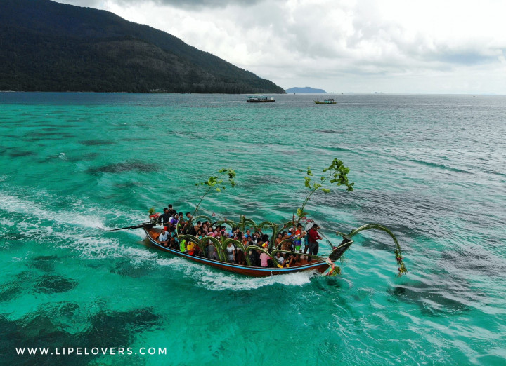

หาดกะรน
หาดกะรน คือสถานที่อันดับต้นๆในรายการ 10 ที่เที่ยวหาดกะรน ที่คุณไม่ควรพลาดโดยเป็นหนึ่งในชายหาดที่ยาวที่สุดและสวยงามที่สุดบนเกาะแห่งนี้
คุณจะได้พบกับทรายที่นุ่มขาวและน้ำทะเลสีฟ้าครามคุณสามารถผ่อนคลาย
บนชายหาดเดินเล่นชิลๆหรือจะเล่นน้ำได้อย่างสดชื่นพร้อมรับชมความสวยงามของทะเลอันดามันหาดกะรนเป็นหาที่ไม่ควรพลาดสำหรับคนรักชายหาดหรือ
ชื่นชอบธรรมชาติสำหรับใครก็ตามที่ชอบธรรมชาติใต้น้ำหาดกะรนนั้นคือสวรรค์ของคุณโดยคุณจะได้สนุกไปกับการดำน้ำทั้งการดำน้ำแบบสกูบาหรือรับชมความสวยงามของแนวปะการังสิ่งมีชีวิตใต้ท้องทะเลต่างๆหรือซากเรืออับปางหากคุณนั้นต้องการดำน้ำเพื่อผ่อนคลายแบบชิลๆการดำน้ำตื้นคือกิจกรรมที่ตอบโจทย์คุณจะได้สำรวจความสวยงามของสิ่งมีชีวิตใต้ท้องทะเลอย่างปลอดภัยใกล้ผิวน้ำสิ่งนี้เหมาะสำหรับผู้ที่กำลังเริ่มต้นเรียนรู้เกี่ยวกับสิ่งมีชีวิตใต้ท้องทะเลโดยไม่ว่าคุณจะมีประสบการณ์มากน้อยแค่ไหนคุณจะได้รับประสบการณ์อันน่าจดจำไปอย่างแน่นอน
ประเพณีลอยเรือชาวเล
ประเพณีลอยเรือชาวเล ของชาวไทยใหม่บ้านแหลมตุ๊กแก จัดพิธีลอยเรือเพื่อสะเดาะเคราะห์ ขอบคุณท้องทะเลแหล่งประกอบอาชีพที่หมู่บ้านชาวไทยใหม่บ้านแหลมตุ๊กแก ต.รัษฎา อ.เมือง จ.ภูเก็ต ชาวไทยใหม่บ้านแหลมตุ๊กแกร่วมกันประกอบพิธีลอยเรือชาวไทยใหม่การลอยเรือของชาวไทยใหม่บ้านแหลมตุ๊กแกนั้นจัดขึ้นเป็นประจำทุกปีในเดือนหกเดือนสิบเอ็ด วันขึ้น 14 ค่ำ และ 15 ค่ำ เพื่อเป็นการเคารพบูชาขอบคุณแม่ย่านางเรือรวมทั้งเพื่อเป็นการขอบคุณท้องทะเลที่เป็นแหล่งทำมาหาเลี้ยงชีพและเป็นการสะเดาะเคราะห์ (ลอยเคราะห์) ของชาวไทยใหม่นอกจากนั้นยังเป็นการเปิดให้ชาวบ้านมาพบหน้ากันและยังเป็นการหาคู่ของหนุ่มสาวชาวเลที่จะได้มีโอกาสดูใจกันและกันและได้แต่งงานกันหลังจากวันลอยเรือประเพณีลอยเรือชาวเลจะเป็นพิธีที่ช่วยขับไล่สิ่งชั่วร้ายออกจากหมู่บ้านให้เรือนำเอาความชั่วร้ายอัปมงคลออกไปพิธีนี้จะปล่อยให้เรือหายไปในทะเลลึกถ้าเรือกลับขึ้นฝั่งแสดงว่าเป็นลางร้ายจะต้องทำพิธีกันใหม่ประเพณีลอยเรือชาวเลชาวไทยใหม่จะกระทำในวันขึ้น 13-15 ค่ำ และวันแรม 1 ค่ำของเดือน 6 และเดือน 11 วันแรกจะเริ่มจากการอาบน้ำมนต์ซึ่งชาวบ้านจะนำเอาโอ่งไหที่บรรจุน้ำและหัวไพลมาวางตรงลานบ้านชาวเลเชื่อว่าหัวไพลนั้นจะช่วยขับไล่สิ่งอัปมงคลออกจากร่างกาย แต่ละบ้านจัดเอาหมากพลูมะกรูดมะนาวด้ายและเศษสตางค์มาประกอบในพิธีด้วยเมื่อเวลาพลบค่ำโต๊ะหมอผู้นำในการประกอบพิธีจะสวดมนต์ทำพิธีและมีการร้องเพลงอัญเชิญเทพเจ้าให้มาคุ้มครองพวกเขาและหญิงสูงอายุของกลุ่มจะรำถวายเทพเจ้าจนถึงเช้าก็จะมีการอาบน้ำมนต์เพื่อขับไล่สิ่งอัปมงคลออกไปซึ่งก่อนที่จะมีพิธีลอยเรือชาวเลกลุ่มหนึ่งไปหาไม้เพื่อมาใช้ต่อเรือซึ่งจะใช้ไม้เนื้ออ่อนและไม้ระกำส่วนตอนบ่ายมีขบวนแห่ไม้ที่จะใช้นี้ไปรอบๆหมู่บ้าน และทำพิธีในตอนกลางคืนเมื่อช่วยกันต่อเรือเสร็จทุกคนจะมาพร้อมกันที่เรือและจะนำข้าวตอกมาโปรยไปทั่วร่างกายเพื่อเป็นการขับไล่สิ่งไม่ดีออกจากตัวแล้วจึงทิ้งข้าวตอกนั้นลงในเรือซึ่งจะมีการรำไปรอบๆเรือจนถึงเช้ามืดวันรุ่งขึ้นจึงช่วยกันยกเรือพิธีไปใส่ในเรือจริงเพื่อนำไปปล่อยกลางทะเลลึกซึ่งผู้ที่นำเรือไปปล่อยจะต้องเฝ้าดูว่าเรือนั้นจะไม่ย้อนกลับเข้าหาฝั่ง ก็เป็นอันเสร็จพิธี
น้ำพริกภูเก็ต
ภูเก็ตเป็นอีกหนึ่งจังหวัดที่ขึ้นชื่อเรื่องของน้ำพริกอร่อย โดยเฉพาะเมนูน้ำพริกกุ้งต่างๆ
ที่ถือว่าเป็นทั้งอาหารและของฝากยอดฮิตที่พลาดไม่ได้เลยแต่ถ้าใครมาเยือนถึงภูเก็ตเเล้วเมนูน้ำพริกที่เป็นอาหารพื้นเมืองที่อยากให้ได้ลองเลยก็คือ น้ำพริกกุ้งสดหรือที่คนภูเก็ตเรียกว่า “น้ำชุบหยำ” หน้าตาอาจจะดูคล้ายกับบ้านพริกกะปิในภาคกลางแต่จะมีเนื้อที่เหลวกว่าส่วนความอร่อยถ้าใครชอบรสชาติเปรี้ยว เค็ม หวาน และเผ็ดแบบครบๆกินคู่กับผักสดเเล้วเข้ากันดีต้องอย่าลืมลิสต์เมนูนี้เอาไว้เลย
